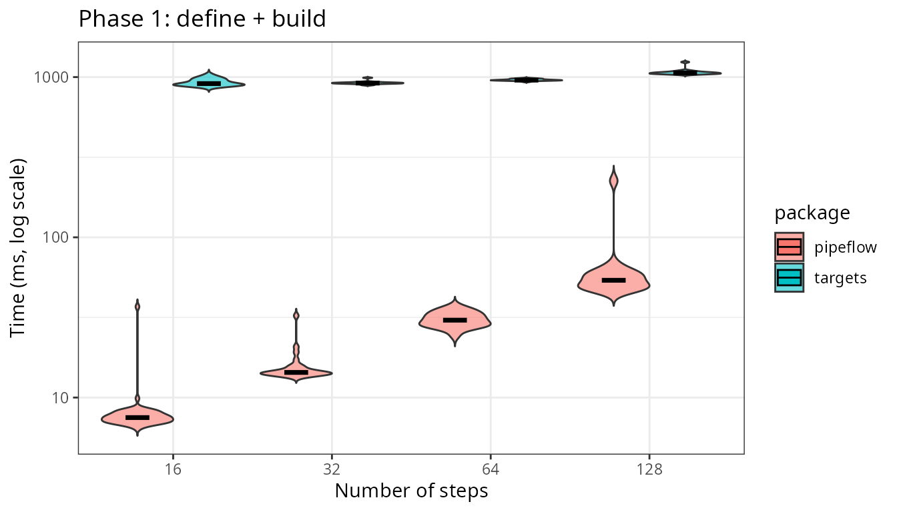
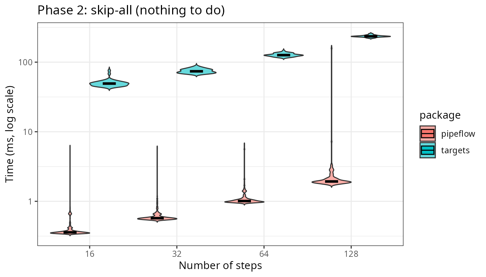
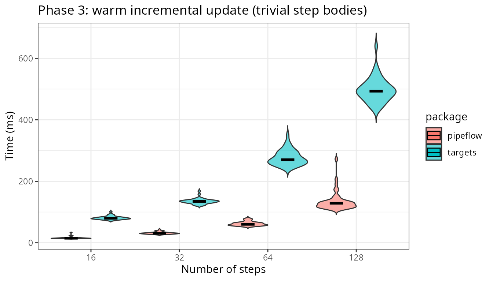
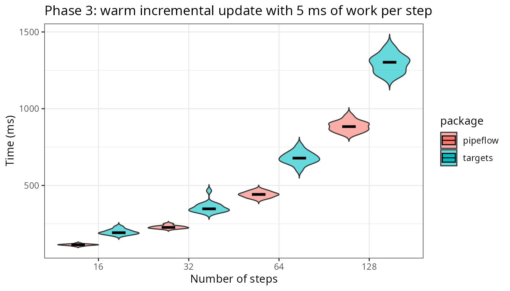
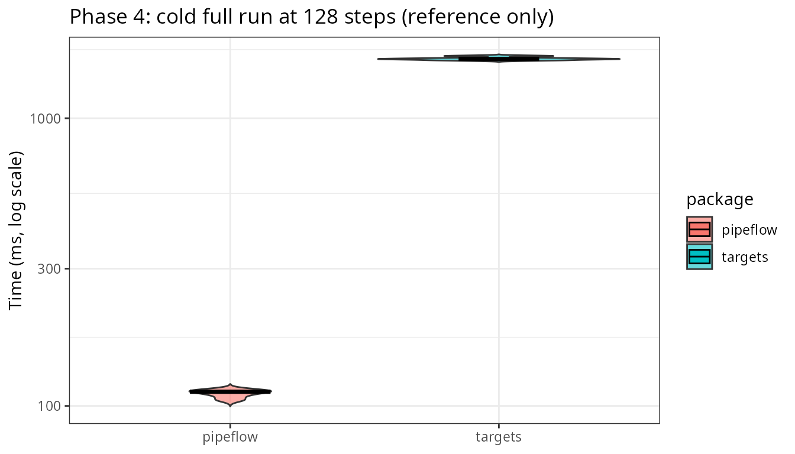
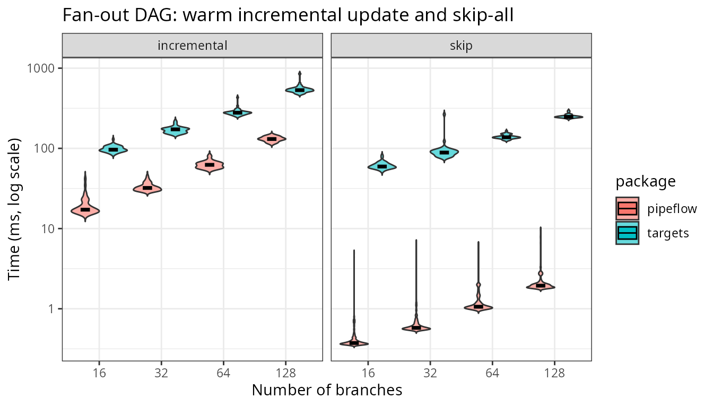

This vignette has two parts. It opens with a general, qualitative comparison of {pipeflow} and {targets} — what each package is designed for and where they differ. It then tries to investigate certain performance characteristics of the two packages in a deliberately scoped benchmark, which will mostly focus on comparing the in-session interactive latency.
General Properties
{targets} is the most widely used pipeline toolkit in the R ecosystem and the de-facto standard for heavy-duty reproducible workflows. The table below contrasts the two packages to help you decide which one fits your project.
| Feature | targets | pipeflow |
|---|---|---|
| Paradigm | Declarative — define the full DAG upfront in a
_targets.R script, then execute |
Interactive — incrementally build the pipeline with
pip_add() as you code |
| Execution |
tar_make() runs in a fresh R process
by default |
pip_run() runs in the current R
session
|
| Persistent storage | ✅ Output stored to disk (_targets/objects/), survives
R restarts, handles data larger than RAM |
❌ In-memory only |
| Skip up-to-date steps | ✅ Hash-based invalidation of code and data | ✅ State-based (done / outdated) |
| Metadata & provenance | ✅ tar_meta() records runtime, size, errors per
target |
❌ No per-step provenance metadata (only the time of last execution) |
| Dependency validation | ✅ tar_validate() for pre-flight checks (opt-in) |
✅ On pip_add(), pip_replace(),
pip_remove() — fails fast on broken references |
| Modify pipeline at runtime | ❌ Must edit _targets.R and re-run |
✅ pip_add() insert with after =,
pip_replace(), pip_remove()
|
| Parameter management | ❌ No unified parameter view across targets | ✅ pip_get_params() / pip_set_params() —
one call updates all steps |
| Split / map / reduce | ✅ pattern = map() / cross() built-in,
tarchetypes for advanced patterns |
✅ Built-in exec = "split" / "auto" /
"reduce"
|
| Dynamic branching | ✅ Comprehensive via tarchetypes
|
✅ Auto-mapping over partition keys
(exec = "auto") |
| Views / tag filtering | ✅ tar_described_as() selects by description tags |
✅ pip_view() and the [ operator — filter
by tags, step names, state, or boolean expressions |
| Pipeline composition | ❌ | ✅ rbind() any number of pipelines |
| Nested pipelines | ❌ | ✅ Steps can embed and run nested pipelines — reuse standalone pipelines as building blocks |
| Self-modifying pipelines | ❌ | ✅ Steps can modify the pipeline at runtime via .self
(add/remove/replace steps, set params) and restart the run with
.self$restart()
|
| Distributed computing | ✅ crew for HPC and cloud workers |
❌ |
| Cloud storage | ✅ AWS, GCS | ❌ |
| File tracking | ✅ File targets with format = "file"
|
❌ |
| Step locking | ❌ | ✅ pip_lock() / pip_unlock() — protect
steps from accidental modification |
| Visualization / monitoring | ✅ tar_visnetwork(), tar_glimpse(),
tar_watch() (live Shiny app) |
✅ pip_graph() → visNetwork |
In short, {targets} is the tool of choice for
large-scale reproducible projects: it persists results to disk, captures
provenance with tar_meta(), and scales to distributed
infrastructure via crew. {pipeflow}
prioritises simplicity, interactivity, and flexibility: in-session
pipeline modification, and low response times make it well suited for
Shiny backends or rapid parameter exploration during analysis.
The benchmark: what we measure
The comparison in this vignette is deliberately scoped. It does not claim that pipeflow is generally “faster at pipelines” but rather is focussing specifically on the in-session interactive latency of each package. We ask how long does a running R session take to:
- declare a pipeline
- check whether anything needs to run, and
- refresh the affected steps after a change
This covers the typical Shiny / parameter-exploration use case pipeflow is built for. For reference we also report the cold full end-to-end run), which is not to be interpreted head-to-head but rather as a demonstration of the different cost models of the two packages.
Each operation is timed as its own, clearly scoped phase:
| Phase | pipeflow | targets |
|---|---|---|
| Define + build |
pip_new() + pip_add() loop |
write _targets.R, then graph build
(tar_manifest()) |
| Skip-all |
pip_run() — all steps done
|
tar_make() — all targets up to date |
| Warm incremental |
pip_set_params() + pip_run()
|
edit parameter in _targets.R +
tar_make(callr_function = NULL)
|
| Cold full run (reference) | pip_run(force = TRUE) |
tar_destroy() + default tar_make() (fresh
process) |
All phases run in the current R session, except the cold reference,
where targets uses its default fresh-process execution. targets
re-sources _targets.R and rebuilds its graph on
every tar_make() and tar_manifest()
call — that fixed per-run cost is part of its in-session latency and is
measured here. pipeflow has no equivalent: its graph is the in-memory
object built once by pip_add().
Measurement method
-
bench::mark()is used withcheck = FALSE(the two expressions return different objects by design),memory = FALSE, andfilter_gc = FALSE. - Each expression is evaluated once and discarded before timing, as an explicit warmup.
- since
bench::mark()does not randomize expressions, every comparison is run twice, with the argument order swapped, and the per-iteration times pooled. - Each expression runs for at least
mi(= 20) iterations andmin_timeseconds, capped atmax_iterations. - targets is run in the current session
(
callr_function = NULL) for all phases except the cold reference. - The targets store lives in a fresh temporary directory
(
tar_dir()) on the same disk for every run.
The operations, in miniature
Here are the pieces being benchmarked on a three-step linear pipeline.
Show code
# ---- pipeflow: linear pipeline --------------------------------------------
create_linear_pip <- function(n, flavor = "trivial", work = 0.005) {
pip <- pip_new("linear") |> pip_add("s0", \(init = 0) init)
for (i in seq_len(n)) {
if (flavor == "costly") {
pip_add(
pip,
step = sprintf("s%d", i),
\(x = ~ -1) {
Sys.sleep(work)
x + 1
}
)
} else {
pip_add(pip, step = sprintf("s%d", i), \(x = ~ -1) x + 1)
}
}
pip
}
# ---- targets: linear pipeline script --------------------------------------
linear_script <- function(n, flavor = "trivial", work = 0.005, init = 0) {
lines <- c(
"library(targets)",
"list(",
sprintf(" tar_target(s0, %s),", init)
)
for (i in seq_len(n)) {
prev <- sprintf("s%d", i - 1)
if (flavor == "costly") {
body <- sprintf(
paste0(
" tar_target_raw(\"s%d\", quote({ Sys.sleep(%s);",
" %s + 1 }))"
),
i, format(work, scientific = FALSE), prev
)
} else {
body <- sprintf(
" tar_target_raw(\"s%d\", quote(%s + 1))", i, prev
)
}
comma <- if (i == n) "" else ","
lines <- c(lines, paste0(body, comma))
}
c(lines, ")")
}
# ---- shared ---------------------------------------------------------------
tar_make_silent <- function() {
tar_make(callr_function = NULL, reporter = "silent")
}
# Each call flips between 0 and 1, so consecutive evaluations of the same
# package always see a genuinely new parameter value. One toggle per package,
# because the benchmark interleaves evaluations of the two packages.
counter <- function() {
k <- 0L
function() {
k <<- 1L - k
k
}
}
# One discarded evaluation of each expression before timing.
warmup <- function(exprs, env) {
for (e in exprs) {
eval(e, env)
}
invisible(NULL)
}
# Turn a bench::mark() result into long (package, time[s]) data.
mark_times <- function(mark_res) {
times <- mark_res$time
data.frame(
package = rep(as.character(mark_res$expression), times = lengths(times)),
time = as.numeric(unlist(times)),
stringsAsFactors = FALSE
)
}
# Benchmark two named quoted expressions in both orders and pool the
# per-iteration times.
bench_pair <- function(exprs, env, min_iterations, min_time = 0.2,
max_iterations = 1000L) {
stopifnot(length(exprs) == 2L, !is.null(names(exprs)))
run <- function(e) {
mark_times(bench::mark(
exprs = e,
env = env,
check = FALSE,
memory = FALSE,
filter_gc = FALSE,
min_iterations = min_iterations,
min_time = min_time,
max_iterations = max_iterations
))
}
rbind(run(exprs), run(exprs[rev(seq_along(exprs))]))
}
run_phase <- function(exprs, env, n, phase, min_iterations, min_time = 0.2,
max_iterations = 1000L) {
warmup(exprs, env)
d <- bench_pair(
exprs, env,
min_iterations, min_time = min_time, max_iterations = max_iterations
)
d$n <- n
d$phase <- phase
d
}
# ---- verify pipelines ----------------------------------------------------
# pipeflow, trivial bodies
p <- create_linear_pip(3)
pip_run(p, lgr = NULL)
stopifnot(p[["s3", "out"]] == 3)
# pipeflow, costly bodies
p_costly <- create_linear_pip(3, flavor = "costly", work = 0.001)
pip_run(p_costly, lgr = NULL)
stopifnot(p_costly[["s3", "out"]] == 3)
# targets, trivial and costly bodies
tar_dir({
writeLines(linear_script(3), "_targets.R")
tar_make_silent()
stopifnot(tar_read(s3) == 3)
writeLines(linear_script(3, flavor = "costly", work = 0.001),
"_targets.R")
tar_make_silent()
stopifnot(tar_read(s3) == 3)
})The mini-pipelines build and run correctly in both packages, with trivial and costly step bodies alike. Let’s see what happens after a change at the head of the chain:
# pipeflow: change one parameter, refresh affected steps
pip_set_params(p, list(init = 1))
print(p)
# <pipeflow> linear (4 steps)
# ---------------------------
# step params depends state out
# 1: s0 init outdated 0
# 2: s1 x s0 outdated 1
# 3: s2 x s1 outdated 2
# 4: s3 x s2 outdated 3
# ---------------------------
# <ready> last run: 2026-10-02 20:37:45
pip_run(p, lgr = NULL)
# pipeflow: everything up to date -> skip-all
pip_run(p, lgr = NULL)
# targets: edit parameter in _targets.R, refresh affected steps
tar_dir({
writeLines(linear_script(3, init = 1), "_targets.R")
tar_make_silent()
})Both packages re-run only the steps affected by the change (the whole chain, in a linear pipeline), and both skip everything when the pipeline is up to date. These are the two operations we time in phases 2 and 3.
Phase 1 — Define and build
How long does it take to declare a pipeline? For pipeflow, that is
the pip_add() loop itself. For targets, it is writing the
target script plus the graph build that tar_manifest()
performs1.

Declaring the pipeline is roughly 20 to 121 times faster in pipeflow
across the four sizes, and the gap widens with n. Again,
the targets bar covers writing _targets.R and the parse and
graph build that tar_manifest() performs once here and then
on every run.
Phase 2 — Skip-all
The closest thing to an apples-to-apples comparison: everything is already up to date, and we time a no-op run.

pipeflow’s skip check stays at or below 1.93 ms even at 128 steps.
targets pays its per-run script re-source and graph rebuild even when no
target runs. That fixed cost is what a targets user pays on
every tar_make() in an interactive session — it
buys the persistent, provenance-tracking store.
Phase 3 — Warm incremental update
Scenario: the pipeline is up to date, a single parameter changed, and
we measure the time until all affected steps are refreshed. Each
iteration changes the source value (pipeflow via
pip_set_params() and targets by editing the value in
_targets.R), so both packages re-run the same affected
steps.
Trivial step bodies
Since with trivial step bodies almost nothing is computed in the steps, we are basically measuring the pure framework overhead, which is the graph traversal and state bookkeeping in pipeflow vs the per-run graph rebuild and per-step bookkeeping in targets.

Non-trivial step bodies
To simulate some real work in the step bodies, we add an additional
fixed cost of 5 ms per step so that each full cascade
performs n * 5 ms of known work.

Once steps do real work, as expected, the update time is increasingly dominated by the work itself, and the two packages are starting to converge.
Phase 4 — Cold full run (reference, not a race)
For completeness, here is the cold end-to-end rebuild. It is not a head-to-head: pipeflow re-runs in a warm in-memory session, while targets destroys its store and runs in a fresh R process, persisting every object to disk with provenance. That is targets’ design and its home turf — the bar shows the magnitude of its cost model, not a defect.
This time the teardown is kept out of the timed region:
tar_destroy() runs before each timed
tar_make().

Does the story change with wide graphs?
We create n parallel branches that converge on one sink
and time the same two phases — skip-all and warm incremental — with
trivial bodies.
Show code
dag_source <- function() 1
dag_branch <- function(x) x + 1
dag_sink <- function(...) sum(...)
make_branch_pip <- function(n) {
pip <- pip_new("dag") |>
pip_add("source", \(init = 0) dag_source() + init)
for (i in seq_len(n)) {
pip_add(pip, sprintf("b%d", i),
\(x = ~source) dag_branch(x))
}
args <- as.pairlist(stats::setNames(
lapply(paste0("b", seq_len(n)), \(s) {
stats::as.formula(paste0("~", s))
}),
paste0("x", seq_len(n))
))
body <- as.call(c(
list(as.symbol("dag_sink")),
lapply(paste0("x", seq_len(n)), as.symbol)
))
sink_fun <- eval(call("function", args, body))
pip_add(pip, "sink", sink_fun)
}
branch_script <- function(n, init = 0) {
branches <- vapply(seq_len(n), function(i) {
sprintf(
" tar_target_raw(\"b%d\", quote(dag_branch(source))),",
i
)
}, character(1))
sink_line <- sprintf(
" tar_target_raw(\"sink\", quote(dag_sink(%s)))",
paste(paste0("b", seq_len(n)), collapse = ", ")
)
c(
"library(targets)",
"dag_source <- function() 1",
"dag_branch <- function(x) x + 1",
"dag_sink <- function(...) sum(...)",
"list(",
sprintf(" tar_target(source, dag_source() + %s),", init),
branches,
sink_line,
")"
)
}
# Verify the wide-graph pipelines build and run correctly in both packages.
p4 <- make_branch_pip(4)
pip_run(p4, lgr = NULL)
stopifnot(p4[["sink", "out"]] == 8)
tar_dir({
writeLines(branch_script(4), "_targets.R")
tar_make_silent()
stopifnot(tar_read(sink) == 8)
})
Overall, wide graphs do not change the picture. The skip checks stay sub-millisecond in pipeflow, and the incremental update scales with the number of re-run steps while targets carries its fixed per-run rebuild.
What the numbers include
The bars above are not all measuring the same thing. This table states explicitly what each phase does and does not include.
| Bar | Step bodies run | Process | Disk persistence | Provenance | Store |
|---|---|---|---|---|---|
| pipeflow skip-all | none | current session | no | no | in-memory |
| targets skip-all | none | current session | yes | yes | on-disk _targets/
|
| pipeflow incremental | affected steps | current session | no | no | in-memory |
| targets incremental | affected steps | current session | yes | yes | on-disk _targets/
|
| pipeflow cold (ref) | all steps | current session | no | no | in-memory |
| targets cold (ref) | all steps | fresh R process | yes | yes | on-disk _targets/
|
In short: targets’ overhead buys disk persistence, provenance, and distributed execution; pipeflow’s buys in-session latency. The benchmark above is a latency comparison, and the numbers only make sense with that caveat attached.
Summary
- Skip-all (Phase 2) is the closest apples-to-apples comparison: while pipeflow’s skip check is sub-millisecond, targets’ is dominated by its per-run graph rebuild.
- Warm incremental (Phase 3) is the fairest measure of interactive latency: pipeflow scales with the re-run steps, targets carries a fixed per-run cost, and with real per-step work the two converge.
- Cold full run (Phase 4) reported as reference only: targets’ fresh-process, disk-persisting rebuild is its home turf, not a race pipeflow can run.
- Treat these as latency numbers, not a general speed
ranking. A targets run that saves hours of recomputation or runs across
crewworkers will win the only race that matters for heavy workloads — and pipeflow will never claim that ground.
Finally, it is worth noting that while this benchmark was mostly focused on sparse step bodies to investigate framework overhead, pipeflow is well equipped to handle more realistic workloads too. Here, two implementation choices matter: while the dependency graph is implemented in C++ and therefore capable of handling large graphs efficiently, the step and parameter bookkeeping is backed by {data.table}, which provides outstanding memory management and reference semantics. Those advantages grow with the size and edit frequency of real pipelines, where in-place updates avoid copying and keep re-runs cheap.
Session info
# R version 4.5.3 (2026-03-11)
# Platform: x86_64-pc-linux-gnu
# Running under: Ubuntu 24.04.4 LTS
#
# Matrix products: default
# BLAS: /usr/lib/x86_64-linux-gnu/openblas-pthread/libblas.so.3
# LAPACK: /usr/lib/x86_64-linux-gnu/openblas-pthread/libopenblasp-r0.3.26.so; LAPACK version 3.12.0
#
# locale:
# [1] LC_CTYPE=C.UTF-8 LC_NUMERIC=C LC_TIME=C.UTF-8 LC_COLLATE=C.UTF-8
# [5] LC_MONETARY=C.UTF-8 LC_MESSAGES=C.UTF-8 LC_PAPER=C.UTF-8 LC_NAME=C
# [9] LC_ADDRESS=C LC_TELEPHONE=C LC_MEASUREMENT=C.UTF-8 LC_IDENTIFICATION=C
#
# time zone: Etc/UTC
# tzcode source: system (glibc)
#
# attached base packages:
# [1] stats graphics grDevices datasets utils methods base
#
# other attached packages:
# [1] ggplot2_4.0.3 bench_1.1.4 targets_1.12.0 pipeflow_0.4.0
#
# loaded via a namespace (and not attached):
# [1] sass_0.4.10 generics_0.1.4 renv_1.2.3 digest_0.6.39
# [5] magrittr_2.0.5 evaluate_1.0.5 grid_4.5.3 RColorBrewer_1.1-3
# [9] fastmap_1.2.0 jsonlite_2.0.0 processx_3.9.0 backports_1.5.1
# [13] secretbase_1.2.2 ps_1.9.3 BiocManager_1.30.27 scales_1.4.0
# [17] codetools_0.2-20 textshaping_1.0.5 jquerylib_0.1.4 cli_3.6.6
# [21] rlang_1.2.0 withr_3.0.2 cachem_1.1.0 yaml_2.3.12
# [25] otel_0.2.0 tools_4.5.3 dplyr_1.2.1 base64url_1.4
# [29] vctrs_0.7.3 R6_2.6.1 lifecycle_1.0.5 fs_2.1.0
# [33] htmlwidgets_1.6.4 ragg_1.5.2 pkgconfig_2.0.3 desc_1.4.3
# [37] callr_3.7.6 pkgdown_2.2.0 pillar_1.11.1 bslib_0.11.0
# [41] gtable_0.3.6 data.table_1.18.6.1 glue_1.8.1 Rcpp_1.1.1-1.1
# [45] systemfonts_1.3.2 xfun_0.57 tibble_3.3.1 tidyselect_1.2.1
# [49] rstudioapi_0.18.0 knitr_1.51 farver_2.1.2 htmltools_0.5.9
# [53] igraph_2.3.2 labeling_0.4.3 rmarkdown_2.31 compiler_4.5.3
# [57] prettyunits_1.2.0 S7_0.2.2